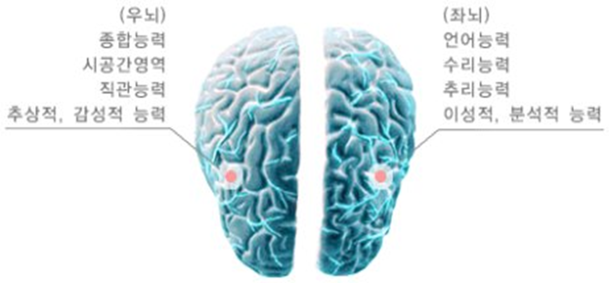
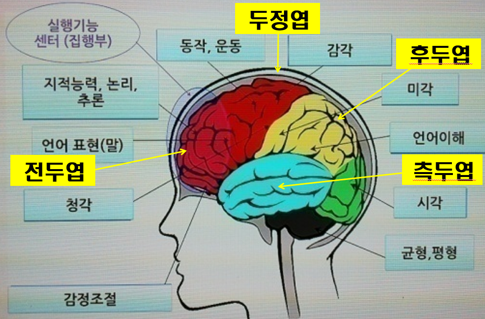

뇌의 구조와 기능은 영아기에 가장 중요
출생 시 신생아의 두뇌는 평균 300~400g 정도로 성인의 25~30% 정도에 불과하지만, 2세경이 되면 75%까지 증가하는 두뇌의 성장급등기(brain growth spurt)를 맞이한다. 두뇌의 각 부위는 발달하는 시기가 각기 다르다. 영아의 반사운동과 신체기능을 통제하는 뇌간(brainstem)은 완전하게 기능을 한다. 감각정보를 담당하는 시상, 운동기능과 자세 조정을 관장하는 소뇌, 기억과 연관된 해마 등은 지속적으로 기능한다. 반면, 대뇌피질은 발달이 가장 덜 된 부위이다.
대뇌피질은 두뇌를 덮고 있는 가장 바깥 부분에 있으며 얇은 신경조직으로 이루어져 있다. 두뇌의 사고, 지각, 판단 등 전체적인 인지능력을 담당하는 대뇌피질은 75%가 신경세포가 밀집되어 있다(Sharpee et al., 2006). 인간을 만물의 영장이라고 하는 것은 대뇌피질의 사고력 때문이다. 원숭이나 돌고래, 코끼리도 대뇌피질이 발달하여 사고 작용은 할 수 있으나 인간처럼 능력이 발달하지 못하다.
대뇌피질은 뇌의 위치에 따라 누반구와 좌반구로 크게 나눈다.

1) 우반구
우반구는 우뇌라고 하며, 신체의 왼쪽부분을 통제한다. 특정 자극이나 사건 혹은 위치로 주의 돌리기, 외부 자극에 선택적 반응하거나 주의집중하는 능력이 존재한다. 시각과 공간의 정보처리, 감정과 직감 등의 기능으로서 음악, 미술 등 비언어적인 소리, 촉각 기능을 맡고 슬픔과 같은 부정적 정서를 관장한다(Fox et al., 1995). 우반구 손상시 언어가 제한되며 화용언어장애가 나타난다. 비정상적인 발화와 연결되면서 상대방의 말에 대한 이해를 못한다.
2) 좌반구
좌반구는 죄뇌라고 하며, 신체의 오른쪽 부분을 통제한다. 좌반구는 정보를 세부적으로 집중하는 능력을 추구한다. 어떤 상황에서도 핵심을 정확하게 파악하고 신중하게 접근하는 방법을 찾으면서 논리적으로 이야기할 수 있다. 은유법을 사용하지 않고 사실 그대로 합리적으로 파고 들기 때문에 적당히 허용하지 않는다. 융통성과 창의력이 부족하며 이기적인 성격이다. 일반적으로 좌반구는 언어, 계산, 논리 등 기능으로서 말하기, 듣기, 의사결정, 기억 등을 담당하는 중추를 맡고 기쁨과 같은 긍정적인 정서를 관장한다.
이처럼 서로 다른 기능을 하는 것을 대뇌 국소화 또는 편측성이라고 한다. 대외 국소화는 출생 시부터 시작된다. 영아에게 음악을 들려주면 우반구보다 죄반구에서 뇌활동이 더 많이 나타낸다. 좌반구와 우반구를 연결하는 뇌량(corpus callosum)은 신경다발의 연결로 두뇌의 기능을 통합해 기억이나 논리적 사고, 창조적 문제해결을 가능하게 한다(Gazzaniga, Bogen, & Sperry, 1962). 대뇌피질이 발달하는 순서는 영아기의 다양한 경험에 의하여 이루어진다.
대뇌피질은 두뇌구조 중 가장 많은 수의 뉴런과 시냅스를 가지고 있다.
대뇌피질은 전두엽, 후두엽, 측두엽, 두정엽 영역으로 구분한다

1) 전두엽
전두엽(frontal lobe)은 자발적인 운동 및 사고와 행동 통제를 담당한다.
전두엽은 영아기 후반부터 기능하기 시작해서 남자 평균 30세, 여자 평균 25세까지 계속 발달한다(Fischer & Rose, 1994; Johnson, 1998).
2) 후두엽
후두엽(occipital lobe)은 시각을 통제담당한다.
3) 측두엽
측두엽(temporal lobe)은 청각기능과 지각작용 능력을 담당한다.
4) 두정엽
두정엽(parietal lobe)은 공간지각과 신체감각에 대한 정보처리를 관장한다.
두뇌발달은 생물학적 요인도 중요하지만 환경으로부터 받는 자극의 양과 영양에 의해서도 영향을 받는다. 때문에 인간은 선천적인 영향보다 후천적인 환경적 자극이 결핍될 경우, 심한 영양실조의 경우에는 신경세포의 수와 크기, 구조 형성과 심각한 두뇌 손상을 초래할 수도 있을 정도로 매우 중요한 기능이 내재되어 있다.
2021.11.02 - [분류 전체보기] - 영아기와 유아기 놀이의 중요성과 인지발달과 관계
영아기와 유아기 놀이의 중요성과 인지발달과 관계
1. 영아기와 유아기 놀이의 의미 아이에게 놀이란 세상을 배우는 수단이자 삶 그 자체다. 또한 놀이야말로 아이를 아이답고 건강하게 키울 수 있는 유일한 방법이다. 아이는 놀이를 통해서 사회
think-sis.tistory.com